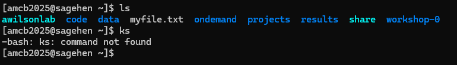
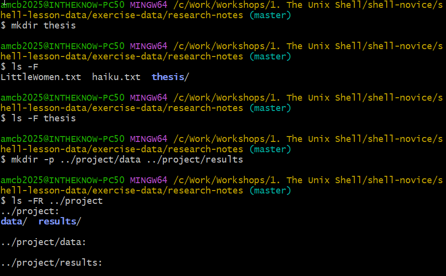
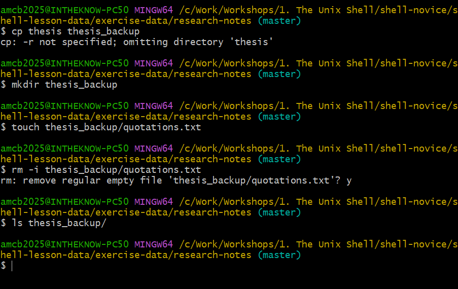
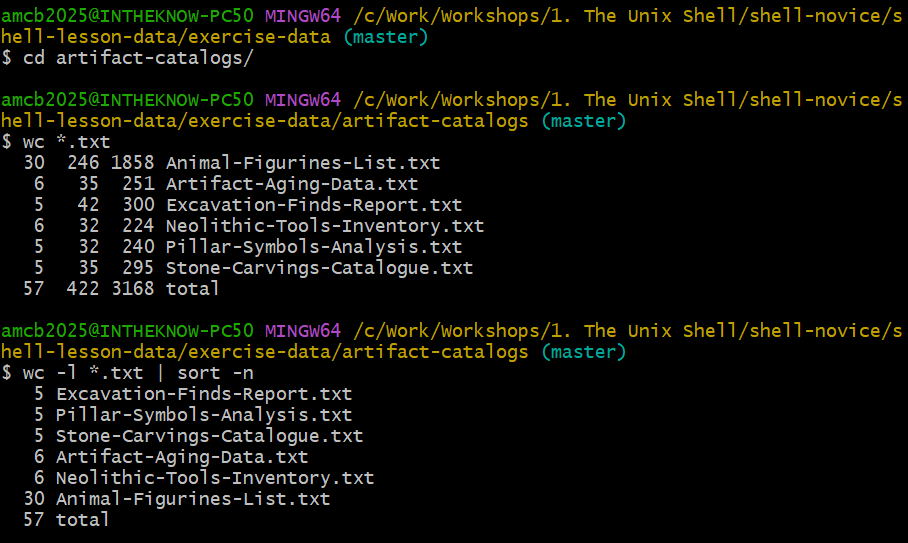
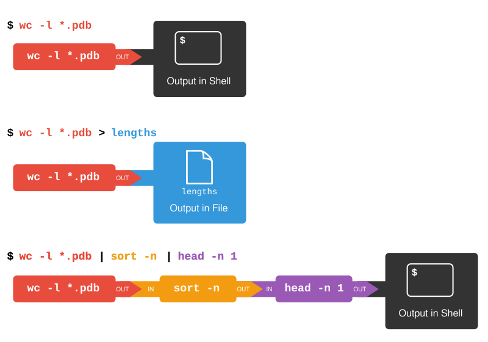
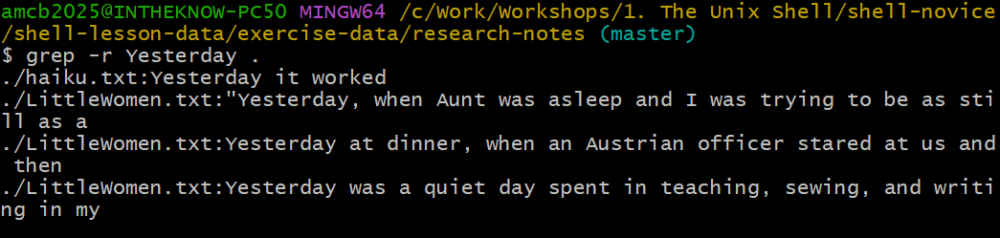
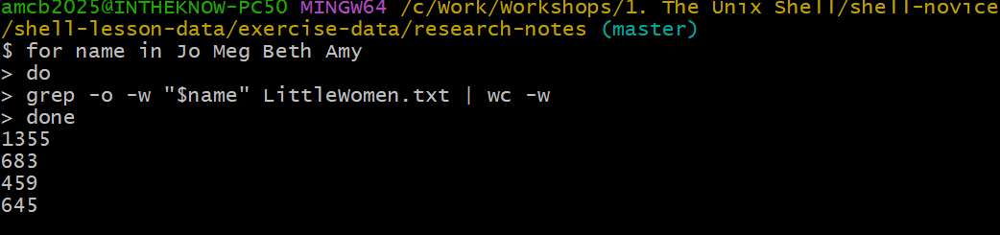
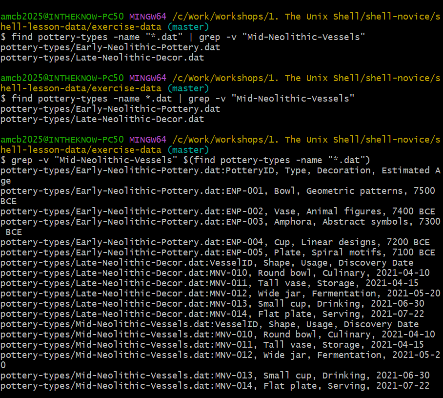

All in One View
Content from Introducing the Shell
Last updated on 2026-08-24 | Edit this page
Overview
Questions
- What is a command shell and why would I use one?
Objectives
- Explain how the shell relates to the keyboard, the screen, the operating system, and users’ programs.
- Explain when and why command-line interfaces should be used instead of graphical interfaces.
Background
Humans and computers interact in various ways, including using keyboards and mice, touchscreens, and voice recognition systems. The most common interaction with personal computers is through a Graphical User Interface (GUI), where we issue commands by clicking a mouse and navigating through menus.
While GUIs are visually intuitive and easy to learn, they’re not very efficient for certain tasks. Consider this scenario: You need to extract the third line from a thousand text files, each in a separate directory, and compile them into a single document. Using a GUI for this would mean hours of mouse clicking and a high risk of errors due to the monotonous nature of the task.
This is where the Unix shell, a Command-Line Interface (CLI) and scripting language, becomes advantageous. The Unix shell excels at automating repetitive tasks quickly and accurately. For instance, the task mentioned in the literature search could be completed in mere seconds using the right shell commands.
The Shell
The shell is essentially a program where users can enter commands. It enables the execution of both complex programs like climate modeling software and simple operations, such as creating an empty directory with a single line of code. Among Unix shells, Bash (the Bourne Again SHell, named as it is an enhanced version of a shell created by Stephen Bourne) is the most widely used. Bash comes as the default shell in most Unix systems and in many Unix-like toolkits for Windows. For Windows users, ‘Git Bash’ provides a Bash-like interface specifically for interacting with Git.
Learning to use the shell requires some time and effort. In contrast to a GUI, which offers options directly for selection, a CLI like the shell doesn’t present choices upfront. Thus, learning it involves familiarizing oneself with certain commands, akin to learning new words in a foreign language. Fortunately, mastering just a handful of these commands can be extremely powerful, and we’ll focus on these essentials.
The shell’s syntax allows for the combination of various tools into efficient pipelines, enabling the automatic handling of large data sets. By writing sequences of commands into a script, one can significantly enhance the reproducibility of their workflows.
Moreover, the command line is frequently the most straightforward way to communicate with remote systems and supercomputers. For those using specialized tools or accessing high-performance computing facilities, shell proficiency is almost indispensable. As the use of computing clusters and cloud computing grows in scientific research, shell skills are becoming increasingly important. The command-line abilities we explore here lay the foundation for engaging with a broad spectrum of scientific inquiries and computational challenges.
Let’s get started.
Upon opening the shell, a prompt appears, signifying that the shell awaits your input.
The shell usually displays $as the prompt, though it
might use a different symbol. In our lesson examples, we’ll represent
the prompt with $. Remember, do not type the prompt when
entering commands. You should only type what comes after the prompt.
This guideline is true for both these lessons and those from other
sources. Also, remember to press the Enter key after typing a
command to execute it.
A text cursor follows the prompt. This cursor, which indicates where your typing will be displayed, may appear as a blinking or steady block, an underscore, or a pipe. It’s similar to what you might have seen in text editors.
Your prompt could appear slightly different. For instance, many
common shell environments include your username and host name before the
$, resulting in a prompt like:
Your prompt might even show more information. Don’t be concerned if
your prompt extends beyond a simple $. This lesson is not
affected by these additional details, and they won’t interfere with our
learning. Our primary focus is on the $character, and we’ll
explore its significance later.
Now, let’s execute our first command, ls, an
abbreviation for “list”. This command displays the contents of the
current directory:
OUTPUT
Desktop Downloads Movies Pictures
Documents Library Music PublicCommand not found
When you enter a command that the shell doesn’t recognize, either
because of a typo or because the corresponding program isn’t installed,
the shell will display an error message. For instance, if you
accidentally type ks instead of a valid command, the
shell’s response will be:
OUTPUT
ks: command not found
ls, then the
error the shell prints for a mistyped command.This might happen if the command was mis-typed or if the program corresponding to that command is not installed.
Cecil’s Pipeline: Solving an Archaeologist’s Challenge
Cecil Sagehen, an archaeologist at Pomona College, has just returned
from a year-long excavation in the Göbekli Tepe
region. During his fieldwork, he gathered extensive data on ancient
artifacts, amounting to 1520 detailed reports, each documenting
different aspects of the findings, including age, origin, and
significance. He plans to analyze the relative age distribution of these
artifacts using a specialized analysis tool called
ancientstats.sh. Additionally, Cecil aims to publish his
findings in the upcoming special issue of Archaeological
Insights by the end of the month.
Manually running ancientstats.sh for each of the 1520
reports would be extremely time-consuming. If each analysis takes 30
seconds, processing all files by hand using a GUI would demand over 12
hours of Cecil’s focus. However, by leveraging the shell, Cecil can
delegate this tedious job to his computer, freeing up his time to
concentrate on drafting his research paper.
The upcoming lessons will delve into how Cecil can use a command
shell to automate running the ancientstats.sh program.
We’ll explore how loops can help automate the repetitive task of
inputting file names, allowing his computer to process the data while he
works on his paper.
An added advantage is that once Cecil constructs this processing pipeline, they can easily reuse it for any future data he collects.
To successfully accomplish their objective, Cecil needs to learn how to:
- Navigate to specific files or directories
- Create new files or directories
- Determine the length of a file
- Chain multiple commands together
- Retrieve a specific set of files
- Iterate over a series of files
- Execute a shell script containing their analysis pipeline
- The shell functions as a program designed to execute other programs, primarily by interpreting and running commands.
- Throughout this lesson, we focus on Bash, which is commonly the default shell in many Unix systems.
- In Bash, programs are executed by typing commands at the command-line prompt.
- The shell offers several benefits, including a high ratio of actions per keystroke, the ability to automate repetitive tasks, and the capability to connect to and operate on networked machines.
- One of the main challenges in using the shell is understanding the specific commands required and the methods to execute them effectively.
Content from Exploring File Systems and Path Navigation
Last updated on 2026-08-25 | Edit this page
Overview
Questions
- What methods are available for navigating through my computer?
- How can I view the files and directories I possess?
- What are the ways to identify the location of a file or directory on my computer?
Objectives
- Distinguish between a file and a directory, explaining their similarities and differences.
- Convert an absolute path to a relative path and vice versa.
- Create absolute and relative paths to pinpoint specific files and directories.
- Apply options and arguments to alter the behavior of a shell command.
- Show how to use tab completion and discuss its benefits.
The file system is a crucial part of the operating system that manages files and directories. It organizes data into files, which store information, and directories (also known as ‘folders’), which can contain files or other directories.
To manage these files and directories, several commands are commonly used for creation, inspection, renaming, and deletion. We’ll start exploring these by going to our open shell window.
Firstly, let’s determine our current location using the
pwd command, which stands for ‘print working directory’.
Think of directories as places; at any given moment in the
shell, we are situated in one specific place, our current
working directory. Most commands operate on files in the
current working directory, meaning ‘here’, so it’s crucial to know your
location before executing a command. The pwd command helps
you identify your current position.
OUTPUT
/Users/cecilHere, the computer’s response is /Users/cecil, which is
Cecil’s home directory:
Variations in Home Directory Paths
The appearance of the home directory path varies across different
operating systems. For instance, on Linux systems, it typically appears
as /home/cecil, whereas on Windows, it might look like
C:\Documents and Settings\cecil or
C:\Users\cecil. It’s important to note that there can be
slight variations in this path depending on the version of Windows you
are using. In our future examples, we’ll primarily use outputs from a
Mac as a standard reference. Outputs from Linux and Windows may have
minor differences but will generally be similar.
We’ll proceed with the assumption that when you execute the
pwd command, it shows your user’s home directory. If
pwd yields a different result, you might need to navigate
to your home directory using the cd command. Otherwise,
certain commands in this lesson might not function as described. For
additional information on using the cd command to explore
other directories, refer to the section Exploring Other Directories.
To grasp the concept of a ‘home directory’, it’s beneficial to first understand the overall structure of the file system. For illustrative purposes, we’ll examine the filesystem on our scientist Cecil’s computer. After this explanation, you’ll learn how to navigate your own filesystem, which will be structured similarly, though not exactly the same.
Here’s an overview of the filesystem on Cecil’s computer:

The filesystem can be visualized as an inverted tree. At the very top
is the root directory, which encompasses everything
underneath. This root directory is denoted by a solitary slash
/; it’s the same slash found at the beginning of
/Users/cecil.
Within this root directory are various subdirectories: -
bin (housing some built-in programs), - data
(for assorted data files), - Users (containing the personal
directories of users), - tmp (for temporary files not
requiring long-term storage), - among others.
We know that Cecil’s current working directory
/Users/cecil is a part of /Users because it
appears at the start of its path. Similarly, the presence of the leading
/ in /Users indicates that it resides within
the root directory.
Understanding the Slash /
It’s important to recognize the dual role of the /
character in file paths. When / is positioned at the
beginning of a file or directory name, it signifies the root directory.
However, when / is found within a path, it serves merely as
a separator between different levels in the directory structure.
Under /Users, there are directories for each user with
an account on Cecil’s machine, including his colleagues Amelia
and Raj.

The files belonging to the user Amelia are located in
/Users/amelia, Raj’s files are in
/Users/raj, and Cecil’s are in /Users/cecil.
In our examples, Cecil is our primary user, so /Users/cecil
is our home directory. Usually, when you open a new command prompt, you
start in your home directory.
Let’s now learn the command that allows us to view the contents of
our filesystem. We can see what’s in our home directory by running
ls:
OUTPUT
Applications Documents Library Music Public
Desktop Downloads Movies Pictures(Your results might vary slightly based on your operating system and any customizations you’ve made to your filesystem.)
The ls command displays the names of files and
directories in the current directory. We can make this output clearer by
using the -F option, which instructs
ls to add a specific marker to each file and directory name
to indicate its type:
- a trailing
/signifies a directory -
@denotes a link -
*marks an executable file
Depending on the settings of your shell, it might also use colors to distinguish files from directories.
OUTPUT
Applications/ Documents/ Library/ Music/ Public/
Desktop/ Downloads/ Movies/ Pictures/Here, we observe that the home directory comprises only sub-directories. Any names in the output lacking a classification symbol are files within the current working directory.
Tidying Up Your Terminal Screen
When your terminal becomes overly crowded, you can tidy it up with
the clear command. This cleans up the screen but doesn’t
erase your command history. You can still revisit your past commands by
using the ↑ and ↓ keys to navigate through them
one line at a time, or by simply scrolling in your terminal.
Discovering Command Help Options
The ls command, like many others, offers a variety of
options for its use. To learn about these options and
how to utilize a command, there are generally two methods, and the next
two sections cover each in turn: the --help option (Linux
and Git Bash) and the man command (Linux and macOS).
Depending on your system, you might find that only one of them is
applicable.
Assistance with Built-in Bash Commands
Certain commands are integrated directly into the Bash shell and
don’t exist as standalone programs in the filesystem. A common example
is the cd command, used for changing directories. If you
encounter a message such as No manual entry for cd, an
alternative is to use help cd. This help
command provides guidance on using the Bash
built-ins, which are the commands that are part of the shell
itself.
The --help option
The majority of Bash commands and programs designed for use in Bash
typically support a --help option. This feature provides
additional details on how to effectively utilize the command or
program.
OUTPUT
Usage: ls [OPTION]... [FILE]...
List information about the FILEs (the current directory by default).
Sort entries alphabetically if neither -cftuvSUX nor --sort is specified.
Mandatory arguments to long options are mandatory for short options, too.
-a, --all do not ignore entries starting with .
-A, --almost-all do not list implied . and ..
--author with -l, print the author of each file
-b, --escape print C-style escapes for nongraphic characters
--block-size=SIZE scale sizes by SIZE before printing them; e.g.,
'--block-size=M' prints sizes in units of
1,048,576 bytes; see SIZE format below
-B, --ignore-backups do not list implied entries ending with ~
-c with -lt: sort by, and show, ctime (time of last
modification of file status information);
with -l: show ctime and sort by name;
otherwise: sort by ctime, newest first
-C list entries by columns
--color[=WHEN] colorize the output; WHEN can be 'always' (default
if omitted), 'auto', or 'never'; more info below
-d, --directory list directories themselves, not their contents
-D, --dired generate output designed for Emacs' dired mode
-f do not sort, enable -aU, disable -ls --color
-F, --classify append indicator (one of */=>@|) to entries
... ... ...Handling Unsupported Command-Line Options
When you attempt to use a command-line option that isn’t recognized,
commands like ls typically respond with an error message.
For example, if you try an unsupported option with ls, it
would look something like this:
ERROR
ls: invalid option -- 'j'
Try 'ls --help' for more information.This response indicates that the option you tried is invalid and
suggests using the --help option to get more information
about the command.
Utilizing the man Command
Another method to learn about ls is by entering the
following command:
Executing this command transforms your terminal into a page
displaying a detailed description of the ls command and its
various options.
While navigating the man pages, you can move
line-by-line using ↑ and ↓. For quicker
navigation, B moves up a full page and Spacebar
moves down a full page. To search for a specific character or word
within the man pages, press / followed by your
search term. If your search yields multiple results, you can jump
between these occurrences with N (to go forward) and
Shift + N (to go backward).
To exit the man pages, simply press Q.
Accessing Manual Pages Online
Beyond the command-line, there’s a third method to find help for Unix
commands: using your web browser to search the internet. When searching
online, adding unix man page to your query can lead to more
pertinent results.
Additionally, GNU offers a comprehensive collection of manuals online. This includes the core GNU utilities, which provide detailed information on many of the commands discussed in this lesson.
Investigating Further Options in
ls
Try combining two options together.
What outcome does ls produce with the -l
option?
And what happens when you combine the -l option with the
-h option?
While some of the information provided by these options, like file permissions and ownership, isn’t covered in this lesson, the remaining details can still be quite informative.
Using the -l option with ls enables a
long format listing. This doesn’t just show the names
of files or directories but also additional details like file size and
the time of the last modification. When you use -h along
with -l, it formats the file size in a
‘human readable’ manner, presenting sizes like
5.3K instead of 5369.
Sorting Files by Last Modified in Reverse
Normally, ls sorts the contents of a directory
alphabetically by their names. However, if you use ls -t,
it sorts files by the time of their last modification, not
alphabetically. On the other hand, ls -r displays directory
contents in reverse order. What file appears last when you use both the
-t and -r options together? Tip: To view the
dates of last modifications, you might need to include the
-l option.

ls options on Sagehen: an
invalid option error, long and human-readable listings, and time/reverse
sorting — note the lab-storage symlinks pointing into
/bigdata/lab/.When combining -rt with ls, the file that
was most recently modified appears at the end of the list. This sorting
method is particularly useful for identifying the latest changes you’ve
made or for verifying whether a new output file has been created.
Navigating Across Different Directories
ls isn’t limited to just listing the contents of the
current working directory. We can also use it to explore the contents of
other directories. For example, let’s examine what’s in our
Desktop directory by using ls -F Desktop,
where ls is the command, -F is an
option, and Desktop is the argument.
The Desktop argument instructs ls to list
contents from a directory other than the current one:
OUTPUT
shell-lesson-data/If you don’t have a Desktop directory in your current
working directory, this command will result in an error. Typically, your
home directory contains a Desktop directory, which we
assume is the current working directory.
You should see a list of files and sub-directories in your Desktop
directory, including the shell-lesson-data directory
downloaded earlier. (In most graphical interfaces, the contents of the
Desktop directory appear as icons.)
Organizing files into hierarchically structured directories helps keep track of work. Just as piling hundreds of papers on a desk isn’t practical, keeping numerous files in the home directory can be equally chaotic.
Knowing that shell-lesson-data is on our Desktop, we can
do two things:
First, we can view its contents with ls, passing the
directory name as an argument:
OUTPUT
exercise-data/ gobekli-tepe-excavation/Second, we can change our current directory. The command
cd, followed by a directory name, changes our working
directory. cd stands for ‘change directory’. It doesn’t
change the directory itself but changes the shell’s setting of our
current directory.
To navigate into the exercise-data directory seen above,
use these commands:
These commands take us from the home directory to the Desktop, then
into shell-lesson-data, and finally into
exercise-data. Note that cd doesn’t produce
output when successful. Running pwd after cd
shows we are now in
/Users/cecil/Desktop/shell-lesson-data/exercise-data.
OUTPUT
/Users/cecil/Desktop/shell-lesson-data/exercise-dataRunning ls -F without arguments now lists the contents
of
/Users/cecil/Desktop/shell-lesson-data/exercise-data:
OUTPUT
artifact-catalogs/ excavation-sites/ site-coordinates.txt pottery-types/ research-notes/To move up a directory (to its parent), you might think to use
cd shell-lesson-data, but this returns an error:
ERROR
-bash: cd: shell-lesson-data: No such file or directorycd only recognizes sub-directories within the current
directory. To move up, use:
.. is a shorthand for the parent directory. Running
pwd after cd .. takes us back to
/Users/cecil/Desktop/shell-lesson-data:
OUTPUT
/Users/cecil/Desktop/shell-lesson-dataTo see .. in the ls output, use the
-a option with ls -F:
OUTPUT
./ ../ exercise-data/ gobekli-tepe-excavation/-a (show all) reveals files and directories starting
with ., such as .. (the parent directory). It
also shows . (the current directory). These shortcuts are
useful in many scenarios.
Remember, command line tools often allow combining multiple options
into a single -, like ls -F -a being
equivalent to ls -Fa.
The fundamental commands for navigating your computer’s filesystem
are pwd, ls, and cd. Let’s delve
into some variations of these commands. What happens if you enter
cd without specifying a directory?
To verify what just occurred, use pwd:
OUTPUT
/Users/cecilIt turns out that entering cd without any argument takes
you back to your home directory. This is a quick way to return to a
familiar location if you find yourself lost within your filesystem.
Now, let’s go back to the exercise-data directory we
were in earlier. Previously, we navigated there using three separate
commands, but we can actually reach exercise-data directly
in a single step:
Verify your current location by running pwd and
ls -F.
To move up one level from the exercise-data directory,
we could use cd .., but there’s another method to navigate
to any directory, irrespective of your current position.
Until now, we’ve been using relative paths for
specifying directories. When a command like ls or
cd is paired with a relative path, it seeks that location
from our current spot, not from the filesystem’s root.
Alternatively, you can specify a directory’s absolute
path, which includes its full path starting from the root
directory. An absolute path is indicated by a leading slash
(/). This slash directs the system to trace the path from
the filesystem’s root, ensuring the path is unique regardless of your
current directory.
This method allows us to go back to our
shell-lesson-data directory from any location in the
filesystem, including from within exercise-data. To
determine the absolute path you need, use pwd to find your
current location and then navigate to
shell-lesson-data.
OUTPUT
/Users/cecil/Desktop/shell-lesson-data/exercise-dataConfirm your current directory by running pwd and
ls -F, making sure you’re where you intended to be.
- No:
.denotes the current directory. - No:
/is the root directory of the filesystem. - No: Amanda’s home directory is
/Users/amelia, not/home/amelia. - Yes: Moves up two levels, placing her in
/Users, one level above her home directory. - Yes:
~is a shortcut for the user’s home directory,/Users/ameliain this case. - No: This attempts to access a
homedirectory within the current directory, not the user’s home. - Yes: A roundabout method, but it effectively moves to
~/datathen up one level to~/. - Yes: A direct shortcut to the user’s home directory.
- Yes: Moves up one directory level to
/Users/amelia.
Understanding Relative Path Commands
Referencing the filesystem diagram provided, if the current directory
shown by pwd is /Users/thing, what output will
the command ls -F ../backup produce?
../backup: No such file or directory2012-12-01 2013-01-08 2013-01-272012-12-01/ 2013-01-08/ 2013-01-27/original/ pnas_final/ pnas_sub/

- No: There is indeed a
backupdirectory at/Users. - No: These are the contents of
/Users/thing/backup, but..goes one level up. - No: Same as above;
..takes us to a higher directory level. - Yes:
../backup/refers to thebackupdirectory at/Users/backup/.
Understanding ls with Reverse
Order
Consider the filesystem diagram provided. If pwd shows
/Users/backup, and the -r option makes
ls list items in reverse order, which command(s) would
produce the following output?
OUTPUT
pnas_sub/ pnas_final/ original/
1. ls pwd 2. ls -r -F 3.
ls -r -F /Users/backup
- No:
pwdis not a directory, but a command that prints the working directory. - Yes: Using
lswithout a directory argument lists the contents of the current directory in reverse order. - Yes: This explicitly specifies the absolute path to list in reverse order.
Breaking Down a Shell Command’s Structure
As we delve deeper into shell commands, options, and arguments, it’s beneficial to clarify some terminology using a structured approach.
Let’s examine the following example of a shell command and dissect its components:

In this example, ls is the command.
It’s accompanied by an option, -F, and an
argument, /. Options often begin with a
single dash (-), known as short options,
or a double dash (--), referred to as long
options. [Options] modify how a command operates, while Arguments
specify the objects (like files or directories) the command should act
upon. Sometimes, both options and arguments are collectively called
parameters. Commands can be used with multiple options
and arguments, but they don’t always need to have either.
Options are sometimes called switches or flags, especially when they don’t require an additional argument. In this lesson, however, we’ll stick to the term option.
Spacing is crucial: each part of the command is separated by spaces.
Forgetting a space, like writing ls-F, makes the shell look
for a command that doesn’t exist. Also, be aware that capitalization
matters. For instance, ls -s shows the size of files,
whereas ls -S sorts files by size. Here’s an example:
OUTPUT
total 28
4 artifact-catalogs 4 excavation-sites 12 site-coordinates.txt 4 pottery-types 4 research-notesNote that ls -s shows sizes in blocks, which
vary between different operating systems, so your output might differ
from the example.
OUTPUT
artifact-catalogs excavation-sites pottery-types research-notes site-coordinates.txtTo summarize, our command ls -F / provides a list of
files and directories in the root directory /. An example
output from this command could be:
OUTPUT
Applications/ System/
Library/ Users/
Network/ Volumes/Deciding Between Short and Long Command Options
When you have the choice of using either short or long options for command-line operations:
- When typing commands directly into the shell, use short options. This strategy minimizes keystrokes and speeds up your workflow.
- For scripting purposes, lean towards long options. They provide better clarity and enhance readability, which is crucial as scripts are typically read more frequently than they are written.
Cecil’s Pipeline: File Organization
With his knowledge of files and directories, Cecil is set to organize the upcoming files from the protein assay machine.
He creates a directory named gobekli-tepe-excavation,
reminding him of the data’s origin. This directory will house both the
data files from the assay machine and his data processing scripts.
Each of Cecil’s samples carries a unique ten-character ID following
his lab’s system, such as ‘NENE01729A’. He utilized this ID in his
collection log to note the sample’s location, time and other details.
Thus, he decides to incorporate these IDs into the filenames of each
data file. Given that the assay machine outputs plain text, he names his
files NENE01729A.txt, NENE01812A.txt, and so
on, with all 1520 files going into the same directory.
Now, in his current directory shell-lesson-data, Cecil
can view his files with the command:
While this command is a bit lengthy, Cecil can use tab completion to let the shell do most of the typing. If he types:
and presses Tab, the shell completes the directory name:
Pressing Tab again doesn’t change the output, as multiple possibilities exist. However, pressing Tab twice will list all the files.
If Cecil then types a and presses Tab, the shell will add ‘ancient’ because both script names start with those characters:
To display these files, he can press Tab twice again:
This feature is known as tab completion and is a common convenience across many shell tools.
- The file system is responsible for managing information on the disk.
- Information is stored in files, which are stored in directories (folders).
- Directories can also store other directories, which then form a directory tree.
-
pwdprints the user’s current working directory. -
ls [path]prints a listing of a specific file or directory;lson its own lists the current working directory. -
cd [path]changes the current working directory. - Most commands take options that begin with a single
-. - Directory names in a path are separated with
/on Unix, but\on Windows. -
/on its own is the root directory of the whole file system. - An absolute path specifies a location from the root of the file system.
- A relative path specifies a location starting from the current location.
-
.on its own means ‘the current directory’;..means ‘the directory above the current one’.
Content from File and Directory Management Techniques
Last updated on 2026-08-24 | Edit this page
Overview
Questions
- How do I create, copy, and delete files and directories?
- What methods are available for altering the contents of a file?
Objectives
- Create a directory hierarchy that matches a given diagram.
- Populate this structure by either crafting new files or by copying and renaming existing ones.
- Execute operations to erase, duplicate, and move specific files and directories.
Initiating Directory and File Creation
Now that we’ve covered file and directory navigation, our next step is to learn how to create them.
This section is dedicated to the creation and manipulation of files
and directories. Our base will be the
exercise-data/research-notes directory.
Step One: Confirm Your Current Position and View Contents
We should be in the shell-lesson-data directory, located
on the Desktop. Let’s verify our current directory:
OUTPUT
/Users/cecil/Desktop/shell-lesson-dataNext, let’s navigate to exercise-data/writing and
inspect its contents:
OUTPUT
haiku.txt LittleWomen.txtEstablishing a New Directory
Our task is to create a directory named thesis. This is
achieved with the mkdir thesis command, which typically
does not yield any output:
mkdir is short for ‘make directory’. Since
thesis is specified as a relative path (lacking a leading
slash like /some/path/thesis), it will be generated inside
the current directory:
OUTPUT
haiku.txt LittleWomen.txt thesis/Being a new directory, thesis will be empty:
The mkdir command can also create several directories at
once, even nested structures, using a single command. This capability is
enabled through the -p option:
To list all contents within a directory, including those in
subdirectories, we can use the -R option with
ls. Let’s use ls -FR to view the entire
directory layout under project:

thesis and the nested
project/data and project/results tree,
verified with ls -FR.OUTPUT
../project/:
data/ results/
../project/data:
../project/results:Comparing Shell and Graphical File Management
The process of creating a directory in the shell is functionally the
same as doing it through a graphical file explorer. If you were to open
the same directory in your computer’s file explorer, you would see the
thesis directory there too. Despite their different
interfaces, the shell and graphical file explorer both interact with the
same underlying files and directories.
Effective Naming Conventions for Files and Directories
Selecting clear and simple names for your files and directories can greatly simplify working with the command line. Consider these tips for efficient naming:
- Skip Spaces: Spaces can improve readability but may cause
complications on the command line, where spaces are typically used to
separate arguments. Opt for hyphens (
-) or underscores (_) instead. For example, usegobekli-tepe-excavation/instead ofgobekli tepe excavations/. Experiment by runningmkdir north pacific gyreand observe the outcome withls -F. - Avoid Leading
-: Names that start with-can be misinterpreted as options in many commands. - Stick to Safe Characters: Use letters, numbers, periods
(
.), hyphens (-), and underscores (_) for better compatibility with command line operations. Other symbols can have special meanings and lead to unexpected behavior or even loss of data.
For file or directory names containing spaces or special characters,
enclosing them in double quotes ("") can help prevent
issues.
Generating a Text File
Next, we’ll change our working directory to thesis with
the cd command and proceed to create a file named
draft.txt using the Nano text editor:
Understanding Text Editors and Their Scope
Nano, referred to here as a text editor, is limited to handling plain
text. This means it’s not suitable for managing tables, images, or other
forms of rich media. We’ve chosen Nano for its simplicity in our
examples. Post-workshop, your projects may require more sophisticated
editors. Among Unix users, Emacs, Vim, or graphical editors like Gedit and VScode are popular. For
Windows users, Notepad++
and the built-in notepad (which can be launched from the
command line like nano) are commonly used.
No matter which editor you choose, it’s essential to know its file handling behavior. If initiated from the shell, it typically operates within the current directory. However, if launched from the start menu, it might default to locations like the Desktop or Documents. You can change the default saving location by navigating to a different directory when you first select ‘Save As…’
Now, let’s input some text into our new file.

Once the text is entered, save the file by pressing
Ctrl+O (hold the Ctrl key and press
O). You’ll be asked to confirm the file name; press
Return to proceed with the suggested
draft.txt.
To exit Nano and go back to the shell, use Ctrl+X.
Deciphering the Control (Ctrl) Key Usage
The Control key, commonly abbreviated as ‘Ctrl’, is referred to in
several ways in instructional materials, including: -
Control-X - Control+X - Ctrl-X -
Ctrl+X - ^X - C-x
In Nano, commands at the bottom of the screen, like
^G Get Help ^O WriteOut, translate to
Control-G for accessing help and Control-O to
save your file.
Once you exit Nano, using ls will display our newly
created file, draft.txt:
OUTPUT
draft.txtTrying a Different File Creation Approach
As an alternative to Nano, experiment with this command:
- What function does the
touchcommand serve? Can you find the new filemy_file.txtusing your GUI file explorer? - Examine the file using
ls -l. What is the size ofmy_file.txt? - In what scenarios might this method of file creation be advantageous?
- The
touchcommand generates a new file namedmy_file.txtin your current directory, which can be seen both withlsand in your GUI file explorer. - When you inspect with
ls -l, it reveals thatmy_file.txtis empty, having a size of 0 bytes. - Creating files this way is useful when you need empty files that certain applications will later populate with data.
Before we proceed, let’s tidy up by deleting the file we just made:
The Significance of File Extensions
You might have noticed that cecil’s files follow a ‘name.extension’
format. Using .txt in this lesson is a common convention,
not a requirement. Files can be named almost anything, like
mythesis. However, people often use two-part names with a
filename extension to distinguish file types. For
instance, .txt indicates a plain text file,
.pdf is for PDF documents, .cfg for
configuration files, .png for PNG images, and so on.
Remember, this is a convention of immense practical importance. Files are essentially just bytes, and it’s up to us and our software to interpret these bytes correctly - whether they represent text, images, music, etc.
For example, naming a PNG image of a whale as whale.mp3
doesn’t turn it into an audio file. If you try to open such a misnamed
file, your operating system might mistakenly use a music player, leading
to an error or unexpected behavior.
Renaming and Moving Files and Directories
Let’s go back to the
shell-lesson-data/exercise-data/research-notes
directory:
Inside our thesis directory, we have a file named
draft.txt, which isn’t very descriptive. We can rename it
using mv (short for ‘move’):
Here, the first argument is the file we’re renaming, and the second
is the new name. ls confirms the change:
OUTPUT
quotes.txtBe cautious with mv, as it can overwrite files without
warning. Using mv -i (or mv --interactive)
prompts for confirmation before overwriting.
mv can also move entire directories. Let’s move
quotes.txt to the current working directory:
This command moves the file to the current directory
(.). Now, thesis is empty:
OUTPUT
$We can verify the absence of quotes.txt in the
thesis directory and its presence in the current
directory:
ERROR
ls: cannot access 'thesis/quotes.txt': No such file or directoryOUTPUT
quotes.txtUsing ls with specific filenames or directories lists
only those items, showing an error if they don’t exist.
Moving Files to a new folder
After running the following commands, Jamie realizes that she put the
files sucrose.dat and maltose.dat into the
wrong folder. The files should have been placed in the raw
folder.
BASH
$ ls -F
analyzed/ raw/
$ ls -F analyzed
fructose.dat glucose.dat maltose.dat sucrose.dat
$ cd analyzedFill in the blanks to move these files to the raw/
folder (i.e. the one she forgot to put them in)
Duplicating Files and Directories
The cp (copy) command functions similarly to
mv (move), but instead of moving a file, it creates a
duplicate. To verify the action of cp, we can use
ls with two arguments simultaneously. Just like many Unix
commands, ls can handle multiple inputs:
OUTPUT
quotes.txt thesis/quotations.txtFor copying an entire directory along with its contents, use the recursive
-r option. For example, to make a backup of a
directory:
We can confirm the operation by listing the contents of both
thesis and thesis_backup:
OUTPUT
thesis:
quotations.txt
thesis_backup:
quotations.txtIt’s crucial to include the -r flag when copying
directories. Without this flag, you’ll encounter a message indicating
the directory has been skipped due to the absence of
-r.
Correcting a File Name Mistake
Imagine you’ve created a text file in your current directory to list
the statistical tests for your data analysis, but you accidentally named
it statstics.txt.
To correct this spelling error, which command would be appropriate?
cp statstics.txt statistics.txtmv statstics.txt statistics.txtmv statstics.txt .cp statstics.txt .
- No. This command creates a correctly named file, but the file with the misspelled name would still remain and need deletion.
- Yes, this is the correct way to rename the file.
- No, using
.simply specifies the current directory and does not provide a new name; you cannot have two files with the same name. - No, similar to the above, this copies the file to the current directory without changing its name; duplicate names are not permitted.
Understanding File Movement and Copying
Determine the final output of the ls command in the
sequence shown here:
OUTPUT
/Users/jamie/dataOUTPUT
proteins.datBASH
$ mkdir recombined
$ mv proteins.dat recombined/
$ cp recombined/proteins.dat ../proteins-saved.dat
$ lsOptions:
proteins-saved.dat recombinedrecombinedproteins.dat recombinedproteins-saved.dat
We start off in /Users/jamie/data, where we create a new
directory named recombined. Next, the mv
command relocates proteins.dat into
recombined. Then, cp duplicates this file to
one level up from the current directory, resulting in
/Users/jamie/proteins-saved.dat. The key point is
understanding the destination of the copied file, which is determined
relative to the current directory, not the source file’s location. Thus,
in /Users/jamie/data, the only item displayed by
ls will be the recombined folder.
- No, as
proteins-saved.datis in/Users/jamie - Yes
- No,
proteins.datis now in/Users/jamie/data/recombined - No, as
proteins-saved.datis in/Users/jamie
File and Directory Deletion
Back in the shell-lesson-data/exercise-data/writing
directory, let’s clean up by removing the quotes.txt file
we previously created. We’ll use the rm command (short for
‘remove’) for this task:
To verify that the file is deleted, we use ls:
ERROR
ls: cannot access 'quotes.txt': No such file or directoryThe Finality of Deletion in Unix
In the Unix shell environment, there’s no trash bin or recycle bin to salvage deleted files from, which is a feature present in most of its graphical interfaces. When files are deleted in Unix, they are detached from the file system, freeing up their storage space for reuse. Although there are tools designed to locate and restore deleted files, their success is not assured. The disk space once occupied by the deleted files could be reused immediately, making recovery uncertain.
Practicing Caution with rm
What occurs if we run
rm -i thesis_backup/quotations.txt? Why is this cautionary
step important when using rm?
OUTPUT
rm: remove regular file 'thesis_backup/quotations.txt'? y
rm -i in action: the shell asks
before deleting, and a final ls confirms the file is
gone.Utilizing the -i option with rm prompts for
confirmation before deleting each file (respond with Y to
confirm deletion, or N to cancel). As the Unix shell lacks a
trash bin, any deleted files are irrevocably lost. The -i
option provides an opportunity to double-check that you’re deleting only
the files you intend to, adding a layer of protection against accidental
data loss.
If we try to remove the thesis directory using
rm thesis, we get an error message:
ERROR
rm: cannot remove `thesis': Is a directoryThis happens because rm by default only works on files,
not directories.
rm can remove a directory and all its contents
if we use the recursive option -r, and it will do so
without any confirmation prompts:
Given that there is no way to retrieve files deleted using the shell,
rm -r should be used with great caution (you might
consider adding the interactive option rm -r -i).
Operations with multiple files and directories
Oftentimes one needs to copy or move several files at once. This can be done by providing a list of individual filenames, or specifying a naming pattern using wildcards. Wildcards are special characters that can be used to represent unknown characters or sets of characters when navigating the Unix file system.
Copy with Multiple Filenames
For this exercise, you can test the commands in the
shell-lesson-data/exercise-data directory.
In the example below, what does cp do when given several
filenames and a directory name?
BASH
$ mkdir backup
$ cp pottery-types/Late-Neolithic-Decor.dat pottery-types/Mid-Neolithic-Vessels.dat backup/In the example below, what does cp do when given three
or more file names?
OUTPUT
Early-Neolithic-Pottery.dat Late-Neolithic-Decor.dat Mid-Neolithic-Vessels.datIf given more than one file name followed by a directory name
(i.e. the destination directory must be the last argument),
cp copies the files to the named directory.
If given three file names, cp throws an error such as
the one below, because it is expecting a directory name as the last
argument.
ERROR
cp: target 'Early-Neolithic-Pottery.dat' is not a directoryUsing wildcards for accessing multiple files at once
Understanding Wildcards
In shell operations, the * symbol is a
wildcard that represents any sequence of characters,
including no characters at all. For instance, within the
shell-lesson-data/exercise-data/artifact-catalogs
directory, *.txt would match files like
Animal-Figurines-List.txt,
Artifact-Aging-Data.txt, and any other file that ends with
‘.txt’. Specifically, A*-Data.txt matches files starting
with ‘A’ and ending with ‘-Data.txt’, such as
Artifact-Aging-Data.txt.
The ? wildcard stands for any single character.
Therefore, ?illar-Symbols-Analysis.txt could match
Pillar-Symbols-Analysis.txt, while
*illar-Symbols-Analysis.txt would also match the same
file.
Wildcards can be combined to create patterns like
??????-Symbols-Analysis.txt, which matches files like
Pillar-Symbols-Analysis.txt, assuming the filename begins
with any six characters followed by
-Symbols-Analysis.txt.
Before executing a command, the shell expands these wildcards to a
list of filenames that match the given patterns. If a pattern does not
match any existing file, Bash typically reports an error. For example,
trying ls *.pdf in the artifact-catalogs
directory, which only contains .txt files, would result in
an error. It’s crucial to understand that wildcard expansion is handled
by the shell itself, not by individual commands such as wc
or ls.
Matching Specific File Patterns
Given the artifact-catalogs directory, which
ls command(s) would list the following files?
Artifact-Aging-Data.txt Excavation-Finds-Report.txt
Options:
ls *a*a*.txtls *ti*.txtls *a???-F*.txtls Artifact-*.txt
The correct option is 2.
1. matches files with any characters (*)
before and after the sequence a*a, ending in
.txt. This is too broad — it also catches
Pillar-Symbols-Analysis.txt and
Stone-Carvings-Catalogue.txt, which each contain two
lowercase as.
2. is the correct answer. Only
Artifact-Aging-Data.txt and
Excavation-Finds-Report.txt contain the sequence
ti, so the pattern matches exactly the two files listed and
nothing else.
3. targets files starting with any characters, followed
by a, then exactly three characters, -F, and
any characters, ending with .txt. No file in the directory
matches — Excavation-Finds-Report.txt has four characters
(tion) between a and -F — so this
lists nothing.
4. matches files starting with Artifact-
and ending with .txt, which gives
Artifact-Aging-Data.txt only. It misses
Excavation-Finds-Report.txt.
Organizing and Sharing Data
Sam has a directory full of calibration data, datasets, and dataset descriptions:
BASH
.
├── 2015-10-23-calibration.txt
├── 2015-10-23-dataset1.txt
├── 2015-10-23-dataset2.txt
├── 2015-10-23-dataset_overview.txt
├── 2015-10-26-calibration.txt
├── 2015-10-26-dataset1.txt
├── 2015-10-26-dataset2.txt
├── 2015-10-26-dataset_overview.txt
├── 2015-11-23-calibration.txt
├── 2015-11-23-dataset1.txt
├── 2015-11-23-dataset2.txt
├── 2015-11-23-dataset_overview.txt
├── backup
│ ├── calibration
│ └── datasets
└── send_to_bob
├── all_datasets_created_on_a_23rd
└── all_november_filesWith another field trip on the horizon, Sam needs to back up her data and send specific datasets to her colleague, Bob. She uses the commands below to accomplish her tasks:
BASH
$ cp *dataset* backup/datasets
$ cp ____calibration____ backup/calibration
$ cp 2015-____-____ send_to_bob/all_november_files/
$ cp ____ send_to_bob/all_datasets_created_on_a_23rd/Assist Sam by completing the blanks.
The directory structure should ultimately look like this:
BASH
.
├── 2015-10-23-calibration.txt
├── 2015-10-23-dataset1.txt
├── 2015-10-23-dataset2.txt
├── 2015-10-23-dataset_overview.txt
├── 2015-10-26-calibration.txt
├── 2015-10-26-dataset1.txt
├── 2015-10-26-dataset2.txt
├── 2015-10-26-dataset_overview.txt
├── 2015-11-23-calibration.txt
├── 2015-11-23-dataset1.txt
├── 2015-11-23-dataset2.txt
├── 2015-11-23-dataset_overview.txt
├── backup
│ ├── calibration
│ │ ├── 2015-10-23-calibration.txt
│ │ ├── 2015-10-26-calibration.txt
│ │ └── 2015-11-23-calibration.txt
│ └── datasets
│ ├── 2015-10-23-dataset1.txt
│ ├── 2015-10-23-dataset2.txt
│ ├── 2015-10-23-dataset_overview.txt
│ ├── 2015-10-26-dataset1.txt
│ ├── 2015-10-26-dataset2.txt
│ ├── 2015-10-26-dataset_overview.txt
│ ├── 2015-11-23-dataset1.txt
│ ├── 2015-11-23-dataset2.txt
│ └── 2015-11-23-dataset_overview.txt
└── send_to_bob
├── all_datasets_created_on_a_23rd
│ ├── 2015-10-23-dataset1.txt
│ ├── 2015-10-23-dataset2.txt
│ ├── 2015-10-23-dataset_overview.txt
│ ├── 2015-11-23-dataset1.txt
│ ├── 2015-11-23-dataset2.txt
│ └── 2015-11-23-dataset_overview.txt
└── all_november_files
├── 2015-11-23-calibration.txt
├── 2015-11-23-dataset1.txt
├── 2015-11-23-dataset2.txt
└── 2015-11-23-dataset_overview.txtStreamlining File Organization
Jamie notices her project files could use some better organization:
OUTPUT
analyzed/ fructose.dat raw/ sucrose.datThe files fructose.dat and sucrose.dat are
results from her data analysis but are not in the correct directory.
Which command(s) from this lesson should she use to ensure the following
commands yield the respective outputs?
OUTPUT
analyzed/ raw/OUTPUT
fructose.dat sucrose.datTo tidy up her workspace, Jamie must move fructose.dat
and sucrose.dat into the analyzed directory.
By using *.dat, the shell automatically selects all files
ending with .dat in the current directory. The
mv command then relocates these files to the specified
analyzed directory.
Setting Up a New Experiment’s Folder Structure
You’re embarking on a new experiment and wish to replicate the directory structure from a prior experiment to organize new data.
Let’s say the previous experiment’s data is in a folder named
2016-05-18, containing a data folder with
raw and processed subfolders filled with
files. Your aim is to mimic the 2016-05-18 structure within
a new folder named 2016-05-20, aiming for the following
structure:
OUTPUT
2016-05-20/
└── data
├── processed
└── rawWhich command set would successfully create this structure, and what would the other commands result in?
BASH
$ mkdir 2016-05-20
$ mkdir 2016-05-20/data
$ mkdir 2016-05-20/data/processed
$ mkdir 2016-05-20/data/rawBoth the first two command sets and the fourth set of commands fulfill the goal, creating the required directory structure.
- The first set explicitly creates each directory using relative paths, starting from the top-level directory down to its subdirectories.
- The second set accomplishes the task with navigation, creating each part of the structure step by step.
- The third command set will not work as intended because
mkdircannot create a subdirectory (raworprocessed) within a non-existent intermediate directory (data) without additional options. - The fourth set is efficient, using the
-pflag to create necessary parent directories along the specified path, ensuring all intermediate directories are made as needed. - The last set incorrectly places the
rawandprocesseddirectories at the same level asdata, not inside it.
-
cp [old] [new]duplicates a file from one location to another. -
mkdir [path]generates a new folder at the specified path. -
mv [old] [new]relocates or renames a file or folder. -
rm [path]permanently deletes a file from the filesystem. -
*is a wildcard that can represent any number of characters, making*.txtapplicable to all files with a.txtsuffix. -
?is a wildcard for a single character, meaning?.txtmatches files likea.txtbut not longer names likeany.txt. - The Control key’s usage might be noted in several ways, such as
Ctrl-X,Control-X, or^X. - There’s no undo option in the shell; deleted items are irretrievably lost.
- Filenames usually follow a
name.extensionformat, where the extension suggests the file type but doesn’t enforce it. - For various tasks, a text editor more advanced than Nano might be necessary.
Content from Pipes and Filters
Last updated on 2026-08-24 | Edit this page
Overview
Questions
- How can I use existing commands in combination to perform new tasks?
Objectives
- Learn how to redirect the output of a command into a file.
- Understand how to create command pipelines comprising multiple stages.
- Discuss the typical behavior of programs or pipelines when no input is provided.
- Highlight the benefits of connecting commands using pipes and filters.
With an understanding of basic commands, we’re poised to delve into
what truly sets the shell apart: its capability to seamlessly combine
programs into novel functions. We’ll explore this feature using the
shell-lesson-data/exercise-data/artifact-catalogs
directory, which contains various text files detailing archaeological
finds and analyses. The files, identifiable by the .txt
extension, encompass a range of topics from artifact listings to
excavation reports.
OUTPUT
Animal-Figurines-List.txt Artifact-Aging-Data.txt Excavation-Finds-Report.txt
Neolithic-Tools-Inventory.txt Pillar-Symbols-Analysis.txt Stone-Carvings-Catalogue.txtFor example, let’s execute a basic command:
OUTPUT
42 314 2537 Animal-Figurines-List.txtHere, wc (word count) computes the number of lines,
words, and characters within files, listed in that specific order.
Using wc *.txt applies the wildcard * in
*.txt to match any sequence of characters, effectively
including all .txt files in the directory:
OUTPUT
30 246 1858 Animal-Figurines-List.txt
6 35 251 Artifact-Aging-Data.txt
5 42 300 Excavation-Finds-Report.txt
6 32 224 Neolithic-Tools-Inventory.txt
5 32 240 Pillar-Symbols-Analysis.txt
5 35 295 Stone-Carvings-Catalogue.txt
57 422 3168 totalThis command also provides a total count across all files as its last line of output.
Switching to wc -l modifies the command to only display
the count of lines per file:
OUTPUT
30 Animal-Figurines-List.txt
6 Artifact-Aging-Data.txt
5 Excavation-Finds-Report.txt
6 Neolithic-Tools-Inventory.txt
5 Pillar-Symbols-Analysis.txt
5 Stone-Carvings-Catalogue.txt
57 totalFurthermore, wc can be paired with -m and
-w options to focus on character counts or word counts,
respectively, offering a granular look at the data contained within
these archaeological records.
Handling Commands Without Input
Ever wondered what happens if you run a command that typically processes a file but don’t provide a filename? For instance, consider running:
without following it with *.txt or any input. In such
cases, wc expects to receive input directly from the
command line, leading it to wait for user input interactively. To an
observer, it may appear as though the command has stalled or isn’t
executing any task.
If you find yourself in this situation, you can exit by pressing Ctrl+C. This key combination interrupts the current command, allowing you to regain control.
Redirecting Command Output
Among these files, which one has the least number of lines? Answering this becomes challenging with a larger dataset. The initial step towards solving this is:
The > symbol instructs the shell to
redirect the output from wc into a file
named lengths.txt rather than displaying it on the screen.
If lengths.txt doesn’t exist, the shell creates it; if it
already exists, the file is overwritten without warning, posing a risk
of data loss. Hence, caution is advised with redirection operations.
To verify the file’s creation:
OUTPUT
lengths.txtThe contents of lengths.txt can be displayed using
cat lengths.txt, which outputs the file’s contents to the
screen. The name cat comes from ‘concatenate’, meaning to
link things together sequentially. With only one file specified,
cat simply displays its contents:
OUTPUT
30 Animal-Figurines-List.txt
6 Artifact-Aging-Data.txt
5 Excavation-Finds-Report.txt
6 Neolithic-Tools-Inventory.txt
5 Pillar-Symbols-Analysis.txt
5 Stone-Carvings-Catalogue.txt
57 totalViewing Output in Manageable Portions
While cat is useful for its simplicity and consistency,
it’s not always practical because it outputs an entire file at once. An
alternative is the less command (e.g.,
less lengths.txt), which displays the file content a page
at a time. You can navigate through the file by pressing the spacebar to
move forward a page or b to move back. Press q
to exit the view.
Sorting Output Numerically
We’ll now explore how to use the sort command to
organize the data within the lengths.txt file numerically.
Before we dive into sorting our file, let’s familiarize ourselves with
the sort command through a quick exercise:
Understanding sort -n
Command
Given the file
shell-lesson-data/exercise-data/numbers.txt with these
contents:
10
2
19
22
6Running sort on this file yields:
OUTPUT
10
19
2
22
6However, applying sort -n to the file changes the output
to:
OUTPUT
2
6
10
19
22Why does -n modify the output in this manner?
The -n flag tells sort to arrange the lines
based on numerical values rather than treating them as text, which leads
to a natural numerical order.
We’ll apply the -n flag to ensure the sort
command arranges our lengths.txt data numerically. This
action doesn’t alter the file itself but displays the sorted
results:
OUTPUT
5 Excavation-Finds-Report.txt
5 Pillar-Symbols-Analysis.txt
5 Stone-Carvings-Catalogue.txt
6 Artifact-Aging-Data.txt
6 Neolithic-Tools-Inventory.txt
30 Animal-Figurines-List.txt
57 totalTo save our sorted data, we redirect the output to a new file,
sorted-lengths.txt, using
> sorted-lengths.txt. Afterwards, we can utilize the
head command to display the top entry in
sorted-lengths.txt:
OUTPUT
5 Excavation-Finds-Report.txtThe head -n 1 command specifies that we want only the
first line from the file. Since sorted-lengths.txt lists
file lengths in ascending order, the first line shows the file with the
fewest lines.
Distinguishing Between > and
>>
While > is familiar for redirecting output to files,
>> serves a similar yet distinct purpose. Discover
the differences between these operators by using the echo
command to print text:
OUTPUT
The echo command prints textExperiment with the following commands to understand how
> and >> differ:
and:
Tip: Execute each command twice consecutively and then check the contents of the files.
Using > overwrites testfile01.txt with
‘hello’ each time it’s executed, resetting the file’s contents.
Conversely, >> appends ‘hello’ to
testfile02.txt, accumulating the output with each execution
if the file already exists.
Merging Data with Append
We’re already acquainted with the head command, which
displays the initial segments of files. In contrast, tail
fetches the file’s concluding segments.
Given the file
shell-lesson-data/exercise-data/excavation-sites/Gobekli-Tepe-Site-Data.csv,
predict the result of the following commands and determine what
Gobekli-Tepe-Subset.csv will contain:
BASH
$ head -n 3 Gobekli-Tepe-Site-Data.csv > Gobekli-Tepe-Subset.csv
$ tail -n 2 Gobekli-Tepe-Site-Data.csv >> Gobekli-Tepe-Subset.csvOptions:
- The top three lines from
Gobekli-Tepe-Site-Data.csv. - The bottom two lines from
Gobekli-Tepe-Site-Data.csv. - The first three lines and the last two lines of
Gobekli-Tepe-Site-Data.csv. - Just the second and third lines of
Gobekli-Tepe-Site-Data.csv.
Option 3 is correct. The initial command writes the first three lines
into Gobekli-Tepe-Subset.csv. Following this, the second
command appends the file’s last two lines. The other options do not
correctly represent the effects of using head and
tail in conjunction with redirection and appending.
Streamlining Command Output
In the process of identifying the file with the fewest lines, we’ve
been using intermediate files like lengths.txt and
sorted-lengths.txt to hold our data, which can be
confusing. Simplifying this process involves directly piping
sort into head:
OUTPUT
9 methane.pdbHere, the pipe | allows us to feed the output of
sort directly as input to head, eliminating
the need for sorted-lengths.txt.
Linking Commands in a Pipeline
We can extend the concept of piping to connect multiple commands in a
sequence without intermediate files. For instance, we can pipe the
output of wc directly into sort, and then into
head, negating the need for any temporary storage:
First, we pipe wc’s output to sort:

wc *.txt, then piping
wc -l into sort -n to order the catalog files
by length.OUTPUT
5 Excavation-Finds-Report.txt
5 Pillar-Symbols-Analysis.txt
5 Stone-Carvings-Catalogue.txt
6 Artifact-Aging-Data.txt
6 Neolithic-Tools-Inventory.txt
30 Animal-Figurines-List.txt
57 totalNext, we funnel that sorted list directly into head:
OUTPUT
5 Excavation-Finds-Report.txtThis final command string is akin to applying functions in
mathematics, such as log(3x), and means “the smallest line
count of *.txt files, sorted numerically.”
The conceptual flow of these redirections and pipes is captured in the diagram below:

Identifying the Top 3 Shortest Files
In the current directory, we aim to pinpoint the three files with the smallest number of lines. Which of the following commands accomplishes this?
Options:
wc -l * > sort -n > head -n 3wc -l * | sort -n | head -n 1-3wc -l * | head -n 3 | sort -nwc -l * | sort -n | head -n 3
Option 4 is the correct approach. It uses pipes | to
seamlessly connect the output from wc to sort
and then to head, effectively finding the three files with
the least number of lines without creating intermediate files. Options
involving > incorrectly attempt to redirect output to
files instead of chaining commands.
Embracing the Unix Philosophy
The Unix philosophy’s cornerstone is the concept of chaining small,
specialized programs to achieve complex tasks, a model known as ‘pipes
and filters’. This approach has contributed significantly to Unix’s
enduring success. Instead of crafting monolithic programs that tackle
multiple tasks, Unix developers prioritize creating a suite of simple,
focused tools. Each tool excels at a singular function and seamlessly
integrates with others. Filters, like wc (word count) or
sort, exemplify this philosophy by taking a stream of
input, processing it, and outputting the result. Typically, Unix
utilities consume standard input and output their results to standard
output unless specified otherwise.
This interoperability principle means any tool that reads text lines from standard input and outputs text lines can be woven with others, enhancing their utility. Adopting this practice in your programming allows you and others to incorporate your tools into pipelines, exponentially increasing their functionality.
Understanding Pipelines
Given a file named Gobekli-Tepe-Site-Data.csv in the
shell-lesson-data/excavation-sites/ directory with the
content:
Site ID, Location, Area (sq. meters), Excavation Start Date, Lead Archaeologist, Notable Finds
GT-01, North Sector, 500, 2020-04-15, Dr. Alex Erdem, Ancient ceremonial relics
GT-02, South Sector, 750, 2021-05-22, Dr. Maria Işık, Neolithic tools and pottery
GT-03, East Sector, 600, 2021-06-18, Dr. Emre Yılmaz, Stone carvings and monoliths
GT-04, West Sector, 650, 2022-03-30, Dr. Leyla Akın, Bronze Age artifacts
GT-05, Central Piazza, 800, 2022-07-15, Dr. Hasan Demir, Ritual sites and animal figurinesCan you decipher the flow of text through each pipe and redirection
in the following command sequence? Remember, sort -r sorts
the input in reverse order.
Tip: Incrementally build up the pipeline to check your understanding.
Initially, head selects the first five lines from
Gobekli-Tepe-Site-Data.csv. Subsequently, tail
extracts the final three lines from these five. Applying
sort -r reverses the order of these three lines. The
resulting sorted output is then redirected into final.txt.
To examine the resultant file, use cat final.txt,
revealing:
GT-04, West Sector, 650, 2022-03-30, Dr. Leyla Akın, Bronze Age artifacts
GT-03, East Sector, 600, 2021-06-18, Dr. Emre Yılmaz, Stone carvings and monoliths
GT-02, South Sector, 750, 2021-05-22, Dr. Maria Işık, Neolithic tools and potteryMastering Command Pipelines
The Unix philosophy emphasizes creating compact, modular tools that
accomplish one task well and can be interconnected. This ‘pipes and
filters’ model has fueled Unix’s success. In Unix, a
filter is any program, like wc (word
count) or sort, that takes a stream of input, transforms
it, and outputs the result. Most Unix tools default to reading from
standard input and writing to standard output unless directed
otherwise.
This interoperability principle means that any program reading and writing lines of text can be part of a pipeline, enhancing flexibility and power. Designing your programs to support this model allows you and others to weave these tools into powerful command sequences.
Decoding Animal Data
Given the Gobekli-Tepe-Site-Data.csv file from earlier,
containing various site data, explore how to use the cut
command to isolate sections of each line:
Here, cut removes sections from each line, using the
comma as a delimiter (-d ,), and extracts the second field
(-f 2). This command outputs location names:
OUTPUT
Location
North Sector
South Sector
East Sector
West Sector
Central PiazzaTo refine this list to unique site data names (in this case they are
already unique, but imagine two sites both in South Sector: uniq would
remove one of them, leaving a single line), how would you extend this
command sequence using uniq and another command?
Identifying Unique site data
Given Gobekli-Tepe-Site-Data.csv with multiple entries
per location, use commands to count each location occurrences. Consider
uniq’s -c option for counting occurrences.
Which command sequence accurately counts each site data type?
sort Gobekli-Tepe-Site-Data.csv | uniq -csort -t, -k2,2 Gobekli-Tepe-Site-Data.csv | uniq -ccut -d, -f 2 Gobekli-Tepe-Site-Data.csv | uniq -ccut -d, -f 2 Gobekli-Tepe-Site-Data.csv | sort | uniq -ccut -d, -f 2 Gobekli-Tepe-Site-Data.csv | sort | uniq -c | wc -l
Option 4 accurately counts each locations. It extracts the location names, sorts them, and then counts each occurrence.
Cecil’s Pipeline: Data Verification
Cecil, working on their gobekli-tepe-excavation project,
uses the following commands to check their data files:
Noticing a discrepancy in one file’s line count, he investigates further:
Discovering a file with fewer lines, Cecil deduces it resulted from a machine error. He then checks for excessively long files:
Spotting an aberrant ‘Z’ in a filename, they identify it as a marker for missing information. To find similar cases:
Confirming missing data, Cecil opts to exclude these files from his analysis, planning to use specific wildcard expressions for future data selection.
Cleanup Processed Data
Imagine wanting to keep only raw data files (.dat) and a
processing script, removing processed files (.txt) to save
space. Which command removes only the processed data files?
rm ?.txtrm *.txtrm * .txtrm *.*
-
rm *.txtis the correct answer, targeting and removing all processed.txtfiles without affecting raw.datfiles or other content.
-
wcquantifies lines, words, and characters. -
catdisplays file contents. -
sortorganizes input. -
headshows the first 10 lines. -
tailreveals the last 10 lines. -
command > [file]directs output to a file, overwriting existing content. -
command >> [file]appends output to a file. -
[first] | [second]creates a pipeline, using the output of the first command as input for the second. - Combining simple, focused programs into pipelines epitomizes the shell’s most effective usage.
Content from Automating Repetitive Tasks with Loops
Last updated on 2026-08-24 | Edit this page
Overview
Questions
- How can I automate repetitive tasks across multiple files?
Objectives
- Construct a loop to execute commands individually on each file within a set.
- Monitor the iteration variable’s value throughout the loop’s execution.
- Distinguish between a variable’s name and its value.
- Understand why it’s advised to avoid spaces and certain punctuation in file names.
- Learn how to view and execute recently used commands without retyping them.
Loops provide a way to repeat a set of commands for each item in a list, significantly enhancing automation and efficiency. Like wildcards and tab completion, loops help minimize typing and the potential for errors.
Imagine we have numerous genome files such as
Early-Neolithic-Pottery.dat,
Late-Neolithic-Decor.dat, and
Mid-Neolithic-Vessels.dat. Although our example uses the
exercise-data/pottery-types directory with just three
files, the concept is scalable to hundreds or more.
These files share a format: the first three lines contain the common name, classification, and an update date, followed by DNA sequences. To examine these files:
Our goal is to extract and print the classification from the second
line of each file. This requires executing head -n 2 on
each file and piping that to tail -n 1. To achieve this
efficiently, we use a loop, illustrated in this generalized form:
BASH
# "for" initiates the loop
for thing in list_of_things
do
# Commands within the loop (indentation enhances readability)
operation_using $thing
done Applying this to our task:
BASH
$ for filename in Early-Neolithic-Pottery.dat Late-Neolithic-Decor.dat Mid-Neolithic-Vessels.dat
> do
> echo $filename
> head -n 2 $filename | tail -n 1
> doneOUTPUT
Early-Neolithic-Pottery.dat
ENP-001, Bowl, Geometric patterns, 7500 BCE
Late-Neolithic-Decor.dat
MNV-010, Round bowl, Culinary, 2021-04-10
Mid-Neolithic-Vessels.dat
MNV-010, Round bowl, Culinary, 2021-04-10This demonstrates how loops can streamline the process of performing repetitive tasks on multiple files, making it easier to manage and analyze large datasets.

Understanding Shell Prompts
As we type a loop, the shell prompt changes from $ to
> and then back to $. The >
prompt appears to indicate that the command line is incomplete. A
semicolon ; can be used to separate commands when they are
entered on the same line.
Loops in the shell allow us to execute a command or a group of
commands for each item in a list. During each loop iteration, an item
from the list is assigned to a variable, and the
specified commands are executed. To use the value stored in the
variable, we precede its name with $, signaling to the
shell to substitute the variable’s name with its value.
In our example, we iterate over a list of filenames:
Early-Neolithic-Pottery.dat,
Late-Neolithic-Decor.dat, and
Mid-Neolithic-Vessels.dat. Each iteration assigns a
different filename to the variable filename and processes
it with head and tail commands. Initially,
$filename is Early-Neolithic-Pottery.dat, and
the loop executes head on this file, passing the output to
tail, which prints its second line. The process repeats for
Late-Neolithic-Decor.dat and
Mid-Neolithic-Vessels.dat, with the loop ending after three
iterations due to the list’s size.
Clarifying Symbol Usage
The > symbol is used both as a shell prompt and for
redirecting output, while $ is used as a shell prompt and
for accessing variable values. When the shell displays
> or $, it’s prompting for input. When
you type these symbols, you’re instructing the shell to
redirect output or retrieve a variable’s value.
Variables in loops can be named anything that makes the code
understandable. While the shell doesn’t care about variable names,
choosing meaningful names like filename instead of
x or temperature helps make the code clearer.
Although ${filename} and $filename are
functionally identical, using braces ({}) around variable
names can help delineate them, especially in complex expressions.
Remember, the choice of variable names (thing,
filename, x, temperature) should
always prioritize clarity and meaning to ensure the code remains
accessible and understandable to others. Loops are versatile and can be
used to process not just filenames but also numbers, data subsets, and
more, showcasing the flexibility and power of shell scripting.
Crafting a Loop
How would you construct a loop to print the numbers from 0 to 9?
Looping Over Files
Given the output from ls *.txt in the
shell-lesson-data/exercise-data/artifact-catalogs
directory:
OUTPUT
Animal-Figurines-List.txt Artifact-Aging-Data.txt Excavation-Finds-Report.txt Neolithic-Tools-Inventory.txt Pillar-Symbols-Analysis.txt Stone-Carvings-Catalogue.txtWhat would be the result of executing the following scripts?
First script:
Second script:
Why do these two loops produce different outputs?
The first script repeats the listing of all .txt files
for each iteration of the loop, because ls *.txt is
evaluated to list all .txt files in the directory,
regardless of the loop variable.
OUTPUT
Animal-Figurines-List.txt Artifact-Aging-Data.txt Excavation-Finds-Report.txt Neolithic-Tools-Inventory.txt Pillar-Symbols-Analysis.txt Stone-Carvings-Catalogue.txt
Animal-Figurines-List.txt Artifact-Aging-Data.txt Excavation-Finds-Report.txt Neolithic-Tools-Inventory.txt Pillar-Symbols-Analysis.txt Stone-Carvings-Catalogue.txt
Animal-Figurines-List.txt Artifact-Aging-Data.txt Excavation-Finds-Report.txt Neolithic-Tools-Inventory.txt Pillar-Symbols-Analysis.txt Stone-Carvings-Catalogue.txt
Animal-Figurines-List.txt Artifact-Aging-Data.txt Excavation-Finds-Report.txt Neolithic-Tools-Inventory.txt Pillar-Symbols-Analysis.txt Stone-Carvings-Catalogue.txt
Animal-Figurines-List.txt Artifact-Aging-Data.txt Excavation-Finds-Report.txt Neolithic-Tools-Inventory.txt Pillar-Symbols-Analysis.txt Stone-Carvings-Catalogue.txt
Animal-Figurines-List.txt Artifact-Aging-Data.txt Excavation-Finds-Report.txt Neolithic-Tools-Inventory.txt Pillar-Symbols-Analysis.txt Stone-Carvings-Catalogue.txtThe second script lists each .txt file individually per
iteration because $datafile dynamically represents each
.txt file in turn as the loop proceeds.
OUTPUT
Animal-Figurines-List.txt
Artifact-Aging-Data.txt
Excavation-Finds-Report.txt
Neolithic-Tools-Inventory.txt
Pillar-Symbols-Analysis.txt
Stone-Carvings-Catalogue.txtThe difference arises because the first loop does not utilize the
loop variable within the loop’s body, listing all .txt
files each time. In contrast, the second loop leverages the loop
variable to list each file individually.
Filtering Specific Files for Operation
Within the
shell-lesson-data/exercise-data/artifact-catalogs
directory, evaluate the execution of this loop:
Options:
- No files are listed.
- All files are listed.
- Only
Artifact-Aging-Data.txtis listed. - Only
Animal-Figurines-List.txtandArtifact-Aging-Data.txtare listed.
Option 4 is correct. The pattern A* matches any file
beginning with ‘A’, resulting in the listing of
Animal-Figurines-List.txt and
Artifact-Aging-Data.txt.
Filtering Specific Files for Operation (continued)
Option 5 correctly identifies the outcome. The pattern
*A* matches files containing ‘A’ anywhere in their names,
thus listing Animal-Figurines-List.txt and
Artifact-Aging-Data.txt.
Writing to a File Within a Loop
In the shell-lesson-data/exercise-data/artifact-catalogs
directory, what is the effect of the following loop?
Options:
- Lists all
.txtfiles, saving the content of the first file processed tocombined-logs.txt. - Lists all
.txtfiles, combining their contents intocombined-logs.txt. - Lists
Animal-Figurines-List.txt,Artifact-Aging-Data.txt,Excavation-Finds-Report.txt,Neolithic-Tools-Inventory.txt,Pillar-Symbols-Analysis.txt, andStone-Carvings-Catalogue.txt, with onlyStone-Carvings-Catalogue.txt’s content incombined-logs.txt. - None of the above.
Option 3 is accurate. Each file’s name is echoed, but
combined-logs.txt is overwritten during each iteration,
ultimately only containing the content of
Stone-Carvings-Catalogue.txt.
Combining Files in a Loop
Considering the
shell-lesson-data/exercise-data/artifact-catalogs
directory, assess the result of this loop:
Options:
- Overwrites all-records.txt on each iteration, so it ends up containing only the last file’s content.
- Copies the content of
Artifact-Aging-Data.txtintoall-records.txt. - Concatenates the content from
Animal-Figurines-List.txt,Artifact-Aging-Data.txt,Excavation-Finds-Report.txt,Neolithic-Tools-Inventory.txt,Pillar-Symbols-Analysis.txt, andStone-Carvings-Catalogue.txtintoall-records.txt. - Displays the content of all
.txtfiles on the screen and saves it toall-records.txt.
Option 3 describes the process accurately. The >>
operator appends the content of each .txt file to
all-records.txt, compiling a comprehensive document without
displaying any output to the screen.
Venturing into the
shell-lesson-data/exercise-data/pottery-types directory,
let’s examine a complex loop example:
This script begins by identifying all .dat files, then
employs a combination of commands for processing. Initially, the
echo command reveals the name of the file under
consideration, thus clarifying which file is being processed at any
moment. For example, utilizing echo to print a message:
produces:
OUTPUT
hello pottery worldIn this context, echo $pottery prints the name of the
current file in the loop. Directly inserting the variable like
$pottery in a command might inadvertently try to run the
file name as a command. The loop smartly extracts lines 81-100 from each
file, provided it contains at least 100 lines.
Managing Spaces in Filenames
Spaces separate list items in loops. Thus, if an item (such as a file name) contains spaces, it must be encapsulated in quotes, and so should the loop variable when utilized. For filenames incorporating spaces, such as:
Early Neolithic Pottery.dat
Late Neolithic Decor.datLoop execution would require quotes. (Copies of these two files live
in exercise-data/spaces-demo/, so you can try this yourself
with cd ../spaces-demo.)
BASH
$ for filename in "Early Neolithic Pottery.dat" "Late Neolithic Decor.dat"
> do
> head -n 100 "$filename" | tail -n 20
> doneSteering clear of spaces or special characters in filenames eases
command application. Without quotes, the head command
misreads files with spaces in their names, leading to errors.
Testing by excluding quotes around $filename in the loop
reveals the consequences on filenames with spaces. The absence of quotes
generates errors, as the shell misinterprets the filenames:
OUTPUT
head: cannot open ‘Early' for reading: No such file or directory
head: cannot open ‘Neolithic' for reading: No such file or directory
head: cannot open ‘Pottery.dat' for reading: No such file or directory
head: cannot open ‘Late' for reading: No such file or directory
...To alter files in
shell-lesson-data/exercise-data/pottery-types while
preserving the originals, straightforward copying using wildcards like
cp *.dat original-*.dat fails due to syntax constraints.
Such an attempt triggers an error because cp cannot decode
original-*.dat as a destination directory or file. Instead,
a loop facilitates individual file manipulation and renaming:
This method allows for precise operation on each file within the
pottery-types directory, appending original-
to the beginning of each file’s name to signify a backup copy.
Each iteration copies a file, prefixing the original filename with
original-, thus preserving originals while enabling
modifications. Without output from cp, verifying the loop’s
execution might require manual checks. However, integrating
echo for command previewing offers a debugging strategy
without actual command execution.
Illustrated here, the process underscores the necessity of
echo for verifying loop commands prior to execution:

Cecil’s Pipeline: Script Execution
Cecil proceeds to analyze their data with
ancientstats.sh, a script that computes statistics from
protein sample files, requiring an input and an output file. Initially,
they verify file selection accuracy, focusing on files ending in ‘A’ or
‘B’:
This produces a list of target files. To envision the output filenames, he tweaks the loop to prefix input filenames with ‘stats’:
Before running ancientstats.sh, they test command
generation using echo. Once confident, they replace
echo with the actual script execution command:
However, the lack of immediate feedback prompts them to reintroduce
echo for progress monitoring. Adjusting the loop
accordingly, they ensure visibility of the ongoing process:
BASH
$ for file in NENE*A.txt NENE*B.txt; do echo $file; bash ancientstats.sh $file stats-$file; doneCecil’s adjustments reflect iterative development and testing
practices, emphasizing the utility of echo for debugging
and the iterative refinement of shell commands.
Cecil’s execution of their data processing script indicates it will complete in about two hours. They verify the output quality in another terminal window and, satisfied, take a well-deserved break.
Revisiting Command History
Leveraging history to view and execute past commands is
another efficient way to repeat tasks. Using ! followed by
the command number from the history list reruns that command,
streamlining repetitive tasks.
Enhancing Command History Interaction
Several shortcuts enhance interaction with the command history:
- Ctrl+R initiates a reverse search (‘reverse-i-search’) to locate the most recent command matching entered text. Press Ctrl+R again to find earlier matches. Use the left and right arrow keys to edit the command before execution.
-
!!fetches the last command executed, offering an alternative to the up-arrow key for repetition. -
!$captures the last word of the previous command, useful for quick reference to files or directories in subsequent commands.
Previewing Loop Commands
To prevent errors when executing loops, especially with file
modifications, a “dry run” using echo can preview the
commands without executing them. Consider wanting to append the contents
of several .pdb files into all.txt. Examine
these loop variations for such a preview:
Version 1:
Version 2:
The first version is not a true dry run: because the
>> is left unquoted, bash treats it as real
redirection and appends lines like cat basilisk.pdb into
all.txt.
Version 2, however, is the correct dry run: enclosing the command in
quotes means echo displays it without executing the
redirection, so all.txt is untouched.
Previewing Loop Commands (continued)
This nested loop creates directories for each compound and temperature combination, demonstrating how loops within loops (nested loops) can automate complex directory structures for organizing data.
- A
forloop executes commands for each item in a list. - Use a variable within a loop to refer to the current item.
- Expand a variable’s value with
$name, with${name}as an alternative syntax. - Avoid spaces, quotes, and wildcards like ’*’ or ‘?’ in filenames to simplify command usage.
- Consistent naming and wildcard patterns facilitate file selection for loops.
- Navigate command history with the up-arrow key and Ctrl+R for search.
- Repeat commands with
historyand![number]based on their history number.
Content from Creating Shell Scripts
Last updated on 2026-08-24 | Edit this page
Overview
Questions
- How can I automate and save recurring command sequences for later use?
Objectives
- Craft a shell script that runs a series of commands on a set of files.
- Execute a shell script from the command line.
- Develop a shell script that processes a user-defined set of files specified on the command line.
- Incorporate shell scripts you’ve created, or those created by others, into your data processing pipelines.
Shell scripts significantly enhance the functionality of the shell by
allowing the execution of pre-defined command sequences from a file.
This capability speeds up tasks, increases accuracy, and ensures
repeatability. Let’s practice creating a script for processing data in
the artifact-catalogs/ directory. Begin by creating a
script named extract_notes.sh:
In nano, type in:
 {alt=‘GNU
nano editing extract_notes.sh, marked Modified. The only content line is
cut -d comma -f 5 dollar 1, with nano’s shortcut bar at the
bottom.’}
{alt=‘GNU
nano editing extract_notes.sh, marked Modified. The only content line is
cut -d comma -f 5 dollar 1, with nano’s shortcut bar at the
bottom.’}
When run, this script will extract the “Notes” column from a
comma-separated file. (Our catalog files use commas between columns even
though their names end in .txt.) Save and exit nano
(Ctrl-O, Ctrl-X), ensuring
extract_notes.sh is in the artifact-catalogs
directory.
To execute the script:
Output:
OUTPUT
Notes
Near ceremonial area
In burial ground
Intact
FragmentedThe last two entries are cut short because those Notes themselves
contain a comma – cut ends field 5 at the next comma. (The
leading space on each line is part of the field, since this file has a
space after every comma.)
To make extract_notes.sh more versatile, enabling it to
process any specified file, modify it in nano to utilize $1
for the file name:
With the quotes around "$1", a filename containing
spaces stays together as a single argument: unquoted $1
would split my data.csv into my and
data.csv, while "$1" keeps
my data.csv whole. You can now run the script for any file
in the directory:
To further enhance extract_notes.sh to include
additional arguments for specifying which column to extract, update the
script as follows:
Run it with customized arguments:
Here $1 and $2 are positional
parameters: $1 holds the first argument you type after
the script name, and $2 the second. So in
bash extract_notes.sh Excavation-Finds-Report.txt 5,
$1 is the filename and $2 is
5.
Improve the script’s usability by adding instructional comments at the top:
BASH
# Extracts a specified column from a comma-separated file.
# Usage: bash extract_notes.sh filename column_number
cut -d ',' -f "$2" "$1"For tasks involving multiple files, such as sorting .txt
files by their content length:

Create a script named sort_by_length.sh for a broader
application:
BASH
# Sorts files by their line count.
# Usage: bash sort_by_length.sh one_or_more_filenames
wc -l "$@" | sort -nRun sort_by_length.sh with several files:

sort_by_length.sh in nano
and running it on all .txt files.This script exemplifies the use of $@ to handle multiple
files, showcasing the shell script’s ability to streamline and automate
complex command sequences.
Script for Listing Unique Artifact Types
Leah has several data files, each formatted with dates, artifact types, and counts. To efficiently compile a list of unique artifact types from these files without manually inputting commands, she decides to write a shell script.
Design a shell script named unique_artifacts.sh that
accepts an unlimited number of filenames as command-line arguments. The
script should display a list of unique artifact types mentioned in each
file provided. Each catalog file is comma-separated, with the artifact
type in the second column.
BASH
# Shell script to list unique artifact types from specified files
# Accepts multiple filenames as command-line arguments
# Iterate through each given file
for file in "$@"
do
echo "Unique artifact types in $file:"
# Extract and list unique artifact types
cut -d ',' -f 2 "$file" | sort | uniq
done
unique_artifacts.sh for
five of the catalog files (note the CSV header words appear among the
values).If we’ve executed a sequence of commands to produce a particular result, such as a figure for a report, we might want to regenerate this figure later without manually re-entering commands. To achieve this, we can save these commands to a file using:
redo-figure-3.sh now contains the commands used to
generate the figure, but it includes the history command itself and line
numbers which we don’t need. After a quick edit to clean up these
aspects, we’re left with a script that can accurately reproduce the
figure when executed.
Recording Commands in History Before Execution
Logging commands before their execution ensures a complete history, even if a command crashes the system or causes a hang. This pre-logging provides valuable context for troubleshooting the last actions before a problem occurred, offering insights into potential causes.
In practice, shell scripts evolve from command sequences tested at the prompt, gradually becoming saved files for later reuse. This approach allows us to encapsulate discoveries about data and workflow, ensuring reproducibility with minimal effort. Here’s a workflow example for creating a reproducible script:
Cecil’s Workflow: Script for Reproducible Analysis
Cecil aims to make their data analysis reproducible. They decide to encapsulate their process in a script, starting in their project’s root directory:
They create a script to process data files:
Inside nano, they write:
BASH
# Script to perform statistics on data files
for datafile in "$@"
do
echo Processing $datafile
bash ancientstats.sh $datafile stats-$datafile
doneThis script, named do-stats.sh, allows Cecil to process
files specified at the command line:
They can even streamline their process further by piping the output
to wc -l to count the processed files:
Cecil’s script is flexible, allowing the user to specify which files to process. This means they aren’t confined to a predefined set of files, providing the versatility needed for varied datasets.
Variables in Shell Scripts
With a directory named artifact-catalogs containing
various text files, consider a script named script.sh with
the content:
If you run the script within artifact-catalogs
using:
What would be the expected outcome?
- The script outputs all lines except the first and last from each
.txtfile. - It shows the first and last lines from each
.txtfile. - It displays the first and last lines from every file in the directory.
- It fails due to the quotes around
*.txt.
Option 2 is the correct answer. The quotes stop the shell from
expanding *.txt when you call the script, so
$1 receives the literal string *.txt. But
inside the script, $1 is used unquoted – so when
bash substitutes it into head -n $2 $1, the wildcard
becomes unquoted in that command and the shell expands it
there, matching every .txt file. The script
therefore prints the first and the last line of each .txt
file (with ==> filename <== headers when several
files match). Only if the script used "$1" – quoted – would
the literal *.txt reach head and fail as
option 4 describes. Try both variants to see the difference!
Identifying the Longest File by Extension
Create a script named longest.sh that finds the longest
file (by line count) with a certain extension within a specified
directory. For instance, its usage could be:
This command aims to identify the .txt file with the
most lines within the given directory.
Test the script from inside artifact-catalogs, where we
have been working – . refers to the current directory:
BASH
# Shell script to locate the longest file of a specified extension in a directory.
wc -l $1/*.$2 | sort -n | tail -n 2 | head -n 1This script calculates line counts for files with the given
extension, orders them, and picks the file with the highest line count,
excluding the final summary line wc produces when handling
multiple files.
Script Comprehension for File Operations
Given the artifact-catalogs directory with various
.txt files and potentially other files you’ve added,
analyze what the following three scripts would do when executed as
bash script1.sh *.txt, bash script2.sh *.txt,
and bash script3.sh *.txt, respectively.
For each scenario, the shell expands *.txt to a list of
matching filenames before passing them as arguments to the script.
Script 1 outputs a list of all files in the directory that contain a
period in their names, essentially listing files with extensions. The
provided arguments (*.txt) are not utilized in the script
itself.
Script 2 concatenates and displays the content of the first three
.txt files specified. $1, $2, and
$3 reference the first, second, and third command-line
arguments, respectively.
Script 3 prints all supplied arguments (i.e., all .txt
files) followed by .txt. Using $@ signifies
all arguments passed to the script, resulting in a redundant
.txt appended to each filename listed.
OUTPUT
Animal-Figurines-List.txt Artifact-Aging-Data.txt Excavation-Finds-Report.txt ... .txtScript Debugging
Imagine you’ve stored the script below in a file named
do-errors.sh within Cecil’s
gobekli-tepe-excavation directory:
BASH
# Calculate stats for data files.
for datafile in "$@"
do
echo $datfile
bash ancientstats.sh $datafile stats-$datafile
doneExecuting it from the gobekli-tepe-excavation directory
like so:
results in no output. To diagnose the issue, try running the script
again with the -x option:
What does the output reveal? Which specific line is causing the malfunction?
Activating the -x option puts bash into
debug mode, displaying each command before it’s executed, aiding in
pinpointing errors. This case shows that the echo command
produces no output due to a misspelling in the variable name;
datfile is undefined, leading to an empty output.
- Shell scripts save commands for later use, enhancing reusability.
- Executing
bash [filename]runs the saved commands in a file. -
$@denotes all command-line arguments passed to a shell script. -
$1,$2, and so on, refer to the first, second, and subsequent command-line arguments, respectively. - Enclose variables in quotes to handle values that may contain spaces.
- Allowing users to choose which files to process increases flexibility and aligns with the conventions of Unix commands.
Content from Discovering Content
Last updated on 2026-08-24 | Edit this page
Overview
Questions
- How can I locate files on my system?
- How can I find specific content within files?
Objectives
- Employ
grepto identify lines in text files that match specified patterns. - Utilize
findto locate files and directories matching given patterns. - Apply the output from one command as the input arguments to another.
- Describe the distinction between ‘text’ and ‘binary’ files and the challenges many tools face with the latter.
Just as “Google” has become synonymous with online searching, Unix users often use “grep” as the verb for text searching within files. The term “grep” originates from ‘global/regular expression/print’, a common command sequence in early Unix text processing. It’s also a command-line utility for pattern matching.
grep is used to search for and display lines in files
that match a given pattern. In our demonstrations, we’ll use a file
containing three haikus from a 1998 Salon magazine competition
(Credit to Bill Torcaso, Howard Korder, and Margaret Segall). We’ll be
working in the research-notes subdirectory of
shell-lesson-data. Navigate there from wherever you
unpacked shell-lesson-data – for example, if it’s on your
Desktop:
OUTPUT
The Tao that is seen
Is not the true Tao, until
You bring fresh toner.
With searching comes loss
and the presence of absence:
"My Thesis" not found.
Yesterday it worked
Today it is not working
Software is like that.Let’s start by finding lines that include the word ‘not’:
OUTPUT
Is not the true Tao, until
"My Thesis" not found
Today it is not workingHere, not serves as our search pattern. The
grep command scans the file for lines matching this
pattern. The command structure is simple: grep, followed by
the pattern, and then the file name(s).
The default behavior of grep is case-sensitive matching.
Furthermore, the pattern does not need to match a whole word, as we’ll
see in the next example when searching for ‘The’.
OUTPUT
The Tao that is seen
"My Thesis" not found.To confine matches to lines containing ‘The’ as a separate word, we
can use grep with the -w flag, which matches
whole words only.
As we progress, we’ll explore how grep can be modified
to ignore case (-i) or invert the search, showing lines
without the pattern (-v).
Let’s find occurrences of ‘the’ regardless of case:
OUTPUT
1:The Tao that is seen
2:Is not the true Tao, until
6:and the presence of absence:And now, to display lines excluding the word ‘the’:
OUTPUT
3:You bring fresh toner.
...For a recursive search with grep, use the
-r option. Here’s how to recursively search for
‘Yesterday’:
OUTPUT
./LittleWomen.txt:"Yesterday, when Aunt was asleep and I was trying to be as still as a mouse...
./haiku.txt:Yesterday it worked
grep -r Yesterday . finds matches
in both haiku.txt and LittleWomen.txt — the
real run returns three novel lines.grep has numerous options. For a comprehensive list,
consult grep’s help:
OUTPUT
Usage: grep [OPTION]... PATTERN [FILE]...
Search for PATTERN in each FILE or standard input.
PATTERN is, by default, a basic regular expression (BRE).
Example: grep -i 'hello world' menu.h main.c
... ... ...Mastering grep
Identify the command that produces the output below:
OUTPUT
and the presence of absence:grep "of" haiku.txtgrep -E "of" haiku.txtgrep -w "of" haiku.txtgrep -i "of" haiku.txt
Option 3 is the correct choice because the -w flag
ensures that only entire words matching ‘of’ are selected. The other
options might also find occurrences of ‘of’ within larger words, but
option 3 specifically targets whole-word matches.
The Power of Wildcards in
grep
The true strength of grep lies not in its options but in
its ability to use wildcards, technically known as regular
expressions. This capability, referred to as ‘re’ in ‘grep’, is
both intricate and potent. For those interested in advanced search
techniques, we recommend our lesson on regular
expressions. As an introduction, you can find lines with an ‘o’ in
the second position like so:
OUTPUT
You bring fresh toner.
Today it is not working
Software is like that.The -E option is used alongside quotes around the
pattern to prevent shell interpretation (e.g., expansion of a
*). The ^ symbol anchors the search to the
beginning of a line, the . wildcard matches any single
character, similar to ? in shell globbing, and
o specifically matches the letter ‘o’.
Compiling Species Observations
Leah has a directory filled with hundreds of data files, each formatted as shown:
2012-11-05,deer,5
2012-11-05,rabbit,22
2012-11-05,raccoon,7
2012-11-06,rabbit,19
2012-11-06,deer,2
2012-11-06,fox,4
2012-11-07,rabbit,16
2012-11-07,bear,1She aims to create a shell script that accepts a species as its first
argument and a directory as the second. The script should output a file
named <species>.txt with dates and sighting counts
for the specified species. For instance, given the data above,
rabbit.txt would look like:
2012-11-05,22
2012-11-06,19
2012-11-07,16Arrange the commands below into a single command to fulfill Leah’s requirement:
Hints: Refer to man grep for recursive text search in
directories and man cut for selecting multiple fields.
Example data in exactly this format is in
shell-lesson-data/exercise-data/animal-observations/. Once
you have assembled your command into a script, test it from inside that
directory with bash count-species.sh rabbit . – you should
get the rabbit.txt shown above.
grep -w $1 -r $2 | cut -d : -f 2 | cut -d , -f 1,3 > $1.txtInterestingly, reversing the two cut commands still
yields a functional solution. Experiment with the order on the command
line and inspect each step’s output to understand why both arrangements
work.
Invoke the script like so:
Analyzing “Little Women”
After finishing Little Women by Louisa May Alcott, you and a
friend debate which of the four sisters (Jo, Meg, Beth, and Amy) was
mentioned most. While your friend believes it was Jo, you’re convinced
Amy took the lead. Fortunately, you have the novel’s full text in
LittleWomen.txt
(shell-lesson-data/exercise-data/research-notes/LittleWomen.txt).
How would you use a for loop to count each sister’s
mentions?
Hints: One approach might combine grep, wc,
and a pipe |, while another could leverage certain
grep options. Often, there are multiple solutions to a
problem, chosen based on correctness, elegance, readability, and
efficiency.
for sis in Jo Meg Beth Amy
do
echo $sis:
grep -ow $sis LittleWomen.txt | wc -l
doneOr an alternative method:
for sis in Jo Meg Beth Amy
do
echo $sis:
grep -ocw $sis LittleWomen.txt
doneThis second approach might not capture every mention, as
grep -c counts lines, not individual occurrences.
Therefore, if a line mentions a name multiple times, it only counts
once.
To include uppercase mentions in chapter titles, such as ‘MEG GOES TO
VANITY FAIR’, add -i for case-insensitivity. However, this
adjustment doesn’t change the outcome regarding which sister is
mentioned most.
While grep is adept at searching for lines within files,
the find command specializes in locating files themselves.
With a multitude of options available, we’ll demonstrate its basic
functionalities using the directory structure of
shell-lesson-data/exercise-data as outlined below.
OUTPUT
.
├── artifact-catalogs/
│ ├── Animal-Figurines-List.txt
│ ├── Artifact-Aging-Data.txt
│ ├── Excavation-Finds-Report.txt
│ ├── Neolithic-Tools-Inventory.txt
│ ├── Pillar-Symbols-Analysis.txt
│ └── Stone-Carvings-Catalogue.txt
├── excavation-sites/
│ └── Gobekli-Tepe-Site-Data.csv
├── pottery-types/
│ ├── Early-Neolithic-Pottery.dat
│ ├── Late-Neolithic-Decor.dat
│ └── Mid-Neolithic-Vessels.dat
├── research-notes/
│ ├── haiku.txt
│ └── LittleWomen.txt
└───site-coordinates.txt
The exercise-data directory houses the
site-coordinates.txt file alongside four subdirectories:
artifact-catalogs, excavation-sites,
pottery-types, and research-notes. Each
contains various files.
To begin, let’s execute find . within the
shell-lesson-data/exercise-data directory.

wc -w on grep -o output): 1355, 683, 459, 645
— Jo, Meg, Beth, Amy in order.OUTPUT
.
./artifact-catalogs
./artifact-catalogs/Animal-Figurines-List.txt
./artifact-catalogs/Artifact-Aging-Data.txt
./artifact-catalogs/Excavation-Finds-Report.txt
./artifact-catalogs/Neolithic-Tools-Inventory.txt
./artifact-catalogs/Pillar-Symbols-Analysis.txt
./artifact-catalogs/Stone-Carvings-Catalogue.txt
./excavation-sites
./excavation-sites/Gobekli-Tepe-Site-Data.csv
./pottery-types
./pottery-types/Early-Neolithic-Pottery.dat
./pottery-types/Late-Neolithic-Decor.dat
./pottery-types/Mid-Neolithic-Vessels.dat
./research-notes
./research-notes/haiku.txt
./research-notes/LittleWomen.txt
./site-coordinates.txtHere, the . signifies the current directory, marking the
starting point of our search. The output lists every file and directory
beneath the current location. While initially overwhelming,
find offers numerous options to refine these results.
First, let’s use -type d to filter for directories. The
command then lists the five directories, including .
itself:
OUTPUT
.
./artifact-catalogs
./excavation-sites
./pottery-types
./research-notesSwitching -type d to -type f changes the
focus to files, listing them all:
OUTPUT
./artifact-catalogs/Animal-Figurines-List.txt
./artifact-catalogs/Artifact-Aging-Data.txt
./artifact-catalogs/Excavation-Finds-Report.txt
./artifact-catalogs/Neolithic-Tools-Inventory.txt
./artifact-catalogs/Pillar-Symbols-Analysis.txt
./artifact-catalogs/Stone-Carvings-Catalogue.txt
./excavation-sites/Gobekli-Tepe-Site-Data.csv
./pottery-types/Early-Neolithic-Pottery.dat
./pottery-types/Late-Neolithic-Decor.dat
./pottery-types/Mid-Neolithic-Vessels.dat
./research-notes/haiku.txt
./research-notes/LittleWomen.txt
./site-coordinates.txtAttempting a name-based search with:
OUTPUT
./site-coordinates.txtThis command unexpectedly returns only
./site-coordinates.txt because the shell expands the
wildcard * before find executes. To correct
this, we encase *.txt in quotes, preventing shell expansion
and allowing find to receive the intended pattern:
OUTPUT
./artifact-catalogs/Animal-Figurines-List.txt
./artifact-catalogs/Artifact-Aging-Data.txt
./artifact-catalogs/Excavation-Finds-Report.txt
./artifact-catalogs/Neolithic-Tools-Inventory.txt
./artifact-catalogs/Pillar-Symbols-Analysis.txt
./artifact-catalogs/Stone-Carvings-Catalogue.txt
./research-notes/haiku.txt
./research-notes/LittleWomen.txt
./site-coordinates.txtThe Distinction Between Listing and Finding
While ls and find can perform similarly
with the appropriate options, their default behaviors differ:
ls aims to list all accessible items, whereas
find searches for items matching specific criteria,
presenting only those that fit.
The true strength of the command line comes from its ability to link
tools together. We’ve explored this through piping, and now we’ll
examine another method. As demonstrated,
find . -name "*.txt" lists all text files within or beneath
the current directory. How can we couple this with wc -l to
tally the lines across these files?
The most straightforward approach involves encapsulating the
find command within $():
OUTPUT
30 ./artifact-catalogs/Animal-Figurines-List.txt
6 ./artifact-catalogs/Artifact-Aging-Data.txt
5 ./artifact-catalogs/Excavation-Finds-Report.txt
6 ./artifact-catalogs/Neolithic-Tools-Inventory.txt
5 ./artifact-catalogs/Pillar-Symbols-Analysis.txt
5 ./artifact-catalogs/Stone-Carvings-Catalogue.txt
11 ./research-notes/haiku.txt
21022 ./research-notes/LittleWomen.txt
5 ./site-coordinates.txt
21095 totalThe shell first executes what’s inside $(), substituting
the $() expression with that command’s output. Given
find outputs three filenames, the shell generates the
command:
This is precisely what we intended. The shell’s expansion of
$() allows us to use any command as a custom wildcard, much
like how it expands * and ?.
Pairing find and grep is commonplace.
find locates files matching a specific pattern, while
grep searches within those files for lines matching another
pattern. For instance, we can find .txt files containing
“searching”:
OUTPUT
./research-notes/haiku.txt:With searching comes loss
./research-notes/LittleWomen.txt:sitting on the top step, affected to be searching for her book, but wasFiltering Out Specific Data
The -v option in grep reverses the pattern
matching, showing lines that do not match the given pattern.
Which command could be used to list all .dat files in the
pottery-types directory, excluding
Mid-Neolithic-Vessels.dat? Experiment with your options in
the relevant directory.
find pottery-types -name "*.dat" | grep -v "Mid-Neolithic-Vessels"find pottery-types -name *.dat | grep -v "Mid-Neolithic-Vessels"grep -v "Mid-Neolithic-Vessels" $(find pottery-types -name "*.dat")- None of the above.
Option 1 is accurate. Placing the match expression in quotes stops
the shell from expanding it, so it’s correctly passed to the
find command.
Option 2 functions appropriately because the shell attempts to expand
*.dat but, finding no *.dat files in the
current directory, passes the wildcard expression to
find.
Option 3 is not correct as it attempts to exclude lines containing
‘Mid-Neolithic-Vessels’ within the content of the files, rather than
omitting the Mid-Neolithic-Vessels.dat file name from the
listing results.
Handling Binary Files
Our focus has been on text files, but what about data in non-text formats like images or databases?
While a few tools extend grep to manage some binary
formats, a broader strategy involves converting non-text data into text
or extracting textual components for processing. This approach
simplifies straightforward tasks but often renders complex manipulations
infeasible. For example, extracting image dimensions is doable, but
analyzing spreadsheet formulas is another story.
Eventually, recognizing the shell and text processing limits may lead to adopting another programming language. This isn’t a failure of the shell; many contemporary languages incorporate shell-inspired features, reflecting its enduring influence and utility.
The Unix shell’s longevity and productivity are unparalleled, attributable to its design as a powerful programming environment. Its syntax may seem daunting, but its efficiency in automating tasks and facilitating experimentation is unmatched. GUIs offer initial ease of use, but the shell’s capabilities, once mastered, provide unbeatable productivity. As Alfred North Whitehead observed, progress in civilization is marked by our ability to perform complex tasks without conscious thought.
- Searches for all
.datfiles starting from the current directory. - Counts the number of lines in each of these files.
- Sorts the results numerically, displaying the files from least to most number of lines.

find | grep -v forms filter names; the $()
form greps file contents instead — and reveals two data files are
identical.-
findsearches for files that match specific criteria. -
grepfilters lines within files based on patterns. -
--helpoffers command and program usage information within Bash. -
man [command]provides a command’s manual page. $([command])
replaces itself with the output of the enclosed command.